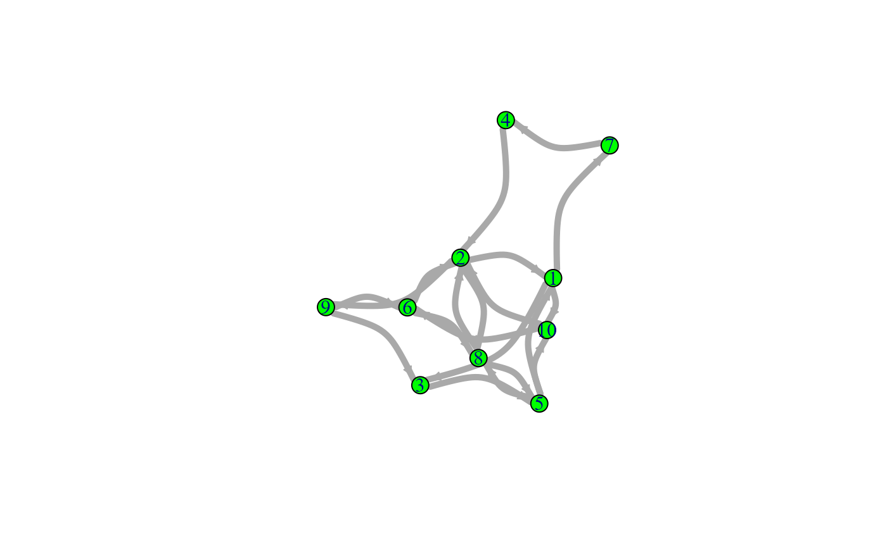
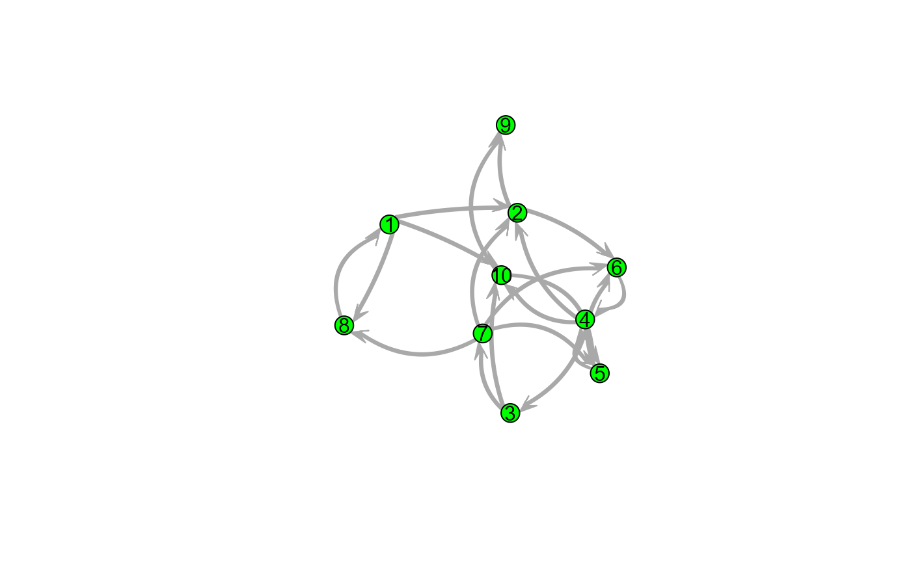

Plot the graph object
# S3 method for class 'igraph'
plot(x, ...)
# S3 method for class 'network'
plot(x, ...)nothing, the object is merely plotted
Plots a graph object of class network or igraph exactly as it
would be plotted by the network or igraph packages,
respectively. The function wraps plot.network and
plot.igraph.
Whatever is set in ... is passed onto these original functions.
See the respective help pages (plot.network,
plot.igraph, and igraph.plotting)
if you want to use settings that deviate from
the default settings in these packages (which is almost always better than
using the defaults).
This function plots the objects just as they would be plotted if the packages were attached, but now they do not need to be attached.
g_i <- snafun::create_random_graph(10, "gnm", m = 20, graph = "igraph")
g_n <- snafun::create_random_graph(10, "gnm", m = 20, graph = "network")
plot(g_i)
plot(g_i, vertex.size = 12, vertex.color = "green", edge.width = 5, edge.curved = TRUE)

plot(g_n)
plot(g_n, vertex.cex = 3, vertex.col = "green", edge.lwd = 10,
edge.col = "darkgrey", usecurve = TRUE, edge.curve = .05,
arrowhead.cex = 3, displaylabels = TRUE, label.pos = 5)
